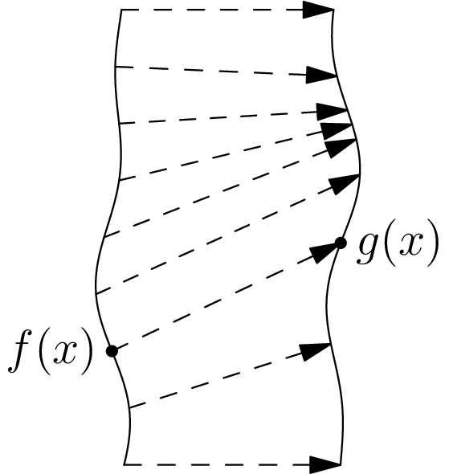

January 4th
Today I learned about type-theoretic homotopies between (dependent) functions. Fix a type $A$ with family $P:A\to\UU.$ Then for dependent functions $f,g:\prod_{(x:A)}P(x),$ we define the type of homotopies as\[f\sim g\equiv\prod_{x:A}(f(x)=g(x)).\]Essentially, we're saying that the two functions are "the same'' (homotopically equivalent) if they are pairwise "identical.'' Topologically, we can view this as saying that we have a path from each $f(x)$ to $g(x),$ so we can visualize the corresponding deformation/homotopy from $g$ to $g$ along each input.
In this way, we can imagine deforming (the graph of) each $f(x)$ and $g(x)$ along the given paths, which is our homotopy. In practice, the fact that this is a dependent function makes this visual not make as much sense—the $f(x)$ and $g(x)$ can live in vastly different universes.
Anyways, homotopy behaves the way we want it to. For example, it forms an equivalence class of functions. Reflexive means that we can witness\[\prod_{f:\prod_{(x:A)}P(x)}(f\sim f)\equiv\prod_{\left(f:\prod_{(x:A)}P(x)\right)}\prod_{(x:A)}(f(x)=f(x)),\]for which $\lambda f.\lambda x.\refl_{f(x)}$ will work because $\refl_{f(x)}:f(x)=f(x).$ Symmetric means that we can witness\[\prod_{f,g:\prod_{(x:A)}P(x)}(f\sim g)\to(g\sim f)\equiv\prod_{\left(f,g:\prod_{(x:A)}P(x)\right)}\left(\prod_{x:A}f(x)=g(x)\right)\to\left(\prod_{x:A}g(x)=f(x)\right),\]for which $\lambda f.\lambda g.\lambda(H:f\sim g).\lambda(x:A).H(x)^{-1}$ will work because $H(x)^{-1}:g(x)=f(x).$ Transitivity means that we can witness\[\prod_{f,g,h:\prod_{(x:A)}P(x)}(f\sim g)\to(g\sim h)\to(f\sim h),\]which is\[\prod_{\left(f,g,h:\prod_{(x:A)}P(x)\right)}\left(\prod_{x:A}f(x)=g(x)\right)\to\left(\prod_{x:A}g(x)=h(x)\right)\to\left(\prod_{x:A}f(x)=h(x)\right),\]for which $\lambda f.\lambda g.\lambda h.\lambda(H_1:f\sim g).\lambda(H_2:g\sim h).\lambda(x:A).H_1(x)\cdot H_2(x)$ will work because $H_1(x)\cdot H_2(x):f(x)=h(x).$